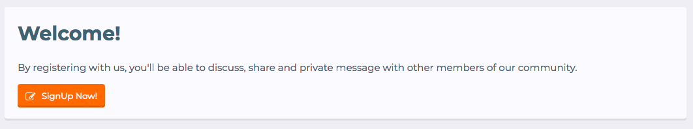

Documentation
Using ReMe - A Powerfull Framework From DohTheme
Basic Options
Google Font: Choose which fonts you wanted loaded from the Google Fonts API.
Avatar Shape: Change small avatars around the forum to visually crop into a specific shape.
Guest Message Shows a welcome section to your visitors
Guest Message Content 
Note In some themes this options is moved to Header and Navigation section with name Header Message.
Remove Top Breadcrumb: Removes the breadcrumb at the top of the page.
Remove Bottom Breadcrumb: Removes the breadcrumb at the bottom of the page.
Remove Breadcrumb on Forum Index: This removes the breadcrumb for the forum list index page.

Remove Title from Forum Index: Removes the page title from the forum index.
Remove page actions from forum index: Enabling this setting removes the page actions from the forum list. By default these are New Posts and Post New Thread.

Header and navigation
Logo Text: Sets the text value to replace the logo image.

Login triggers style: The method in which the login form displays once the trigger is activated.


Condense Visitor Tabs: Allows you to condense the visitor tabs. Links for the Alerts and Conversations are added to the user drop down menu.

Inline Navigation Alert Balloons: Instead of displaying like a balloon, alerts will display inline with the text.
Remove user avatar from navigation: This removes the account tab avatar next to the username.
Remove visitor tab text: This setting allows you to remove the visitor tab text.

Remove visitor tab icons: This setting allows you to remove the visitor tab icons.

Remove Selected Tab Sub-Links: Allows you to remove the selected navigation sub-links.

Node/forum list
Node Background: Go to Forums Then Nodes and click on any node you will find.

Enable Collapsible Category Nodes: Allows user to collapse whole categories in the node list.
Sticky Category Strips: Enables category strips to stick to the top of the page for the category that is currently in view.
Category Description: Sets the tooltip display type.
Alternative Node Background: Sets the background color of even node items.
Hover Background on Nodes: Sets the background color of node items on hover.
Hover Effect on Nodes: This will enable a hover effect for nodes.
Simplified Node Statics: Shows only number of threads inside node.

Show Node Stats on Hover: Hides the node stats, and displays them only when hovering over the node.
Enable Last Poster Avatar: Shows avatar in the last post section.
New Indicator Label: Displays a new indicator next to the node title if there is new content.

Sidebar
Disable Sidebar: Tick in this checked box if you want to disable the sidebar at the forum.
Sidebar Position: Set whether the sidebar is on the left or the right of the main content.
Sticky Sidebar: Makes the sidebar component sticky. The sticky functioanlity is being added purely with CSS. This means that it has no performance drawbacks. However, it is not supported in older browsers.
Collapsible Sidebar: Allows you to collapse and expand the sidebar if it is enabled.
Collapsible Sidebar Block: Allows you to collapse and expand a sidebar block if it is enabled.
Discussion List
Seperate Sticky Threads: This will add headings above sticky threads and above normal threads to clearly differentiate the two types of threads.

Alternative Thread Background: Sets the background color of even discussion list items.
Hover Background on Threads: Sets the background color of discussion list items on hover.
Hover Effect on Threads: This will enable a hover effect for discussion list threads.
Locked Threads Opacity: This will gives transparency to locked threads.
Show avatar of who last posted: Shows avatar in the last post block in thread list items.
Messages
Messages Layout: Specify what message layout you would like to use.


Center Thread Title: This small modification will allow you to center thread message titles.
Offline status indicator: This is an extension of the status indicator to display Online/Offline depending on user's status.
Hide Avatar Beside Editor: This removes user's avatar from Rich text editor.

Collapsible User Extras: Adds a trigger to toggle the postbit extra information open and closed (such as joined, messages, trophies, etc..).

Show User Extras Info On Hover: As opposed to on click, hovering over the postbit extra information will trigger the sliding effect.
Extra Footer
Need more storage for the footer? Don’t worry, we created another footer so you can store more stuff or anything that you want inside.

Glyphs
Navigation Glyphs:

Sidebar Glyphs:

Message Glyphs:

Profile Tabs Glyphs: